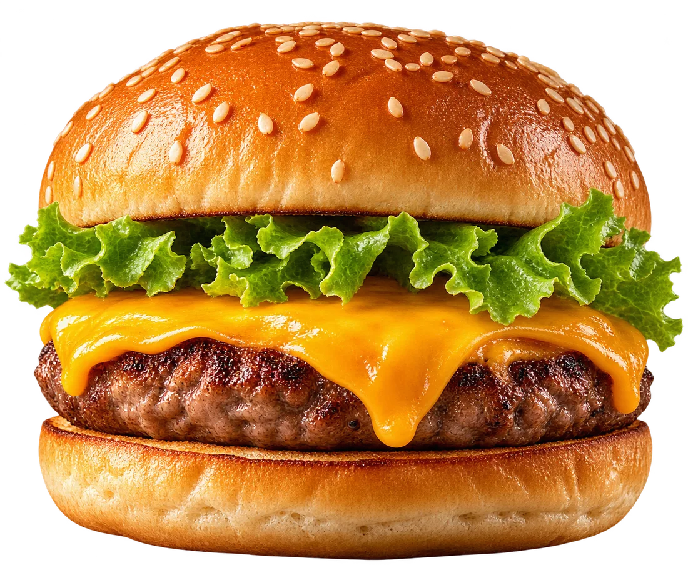
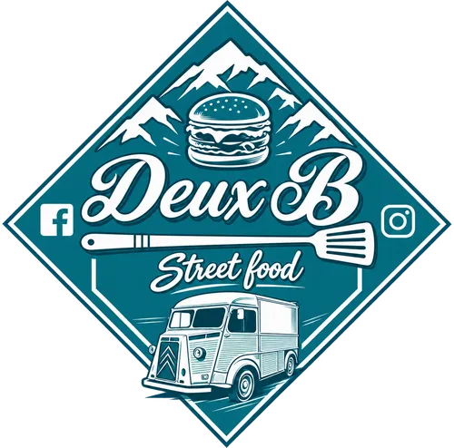

Burgers
& pizzas du Cantal.
Une boutique à Jussac, un camion Type H qui fait la tournée des villages. Le pain sort de notre cuisine, la viande et les fromages viennent d'ici.

pas moins
- Pain burger maison
- Viande Salers & Aubrac
- Fromages du Cantal
- Sauces maison
- B-Tea maison
La
boutique
- Carte
- Burgers + 10 pizzas Ø31, ou la vôtre
- Ouvert
- Mardi · Vendredi · Samedi
- 24h/24
- Distributeur de pizzas, 7j/7
Léon
le camion.
- Quoi
- Burgers, nuggets, desserts maison
- Mercredi
- Vézac, devant la boulangerie
- Jeudi
- Senilhes, sur la place

Cette
semaine
Le planning change d'une semaine à l'autre. On le met à jour ici et sur Instagram tous les lundis.
Fini les burgers et les pizzas au goût industriel.
- 01
Le pain
Pétri et cuit dans notre cuisine. Vous ne le trouverez nulle part ailleurs.
- 02
La viande
De la Salers ou de l'Aubrac, origine France certifiée. On ne voyait pas comment faire autrement.
- 03
Les fromages
Cantal, bleu, St-Nectaire, Rocamadour, et un fromage du mois qui change avec la saison.
- 04
Le reste
Sauces, desserts et B-Tea faits maison. Boissons de producteurs locaux.
- Territoire Viande
- Chastaing & Maury, primeur
- Fromagerie Claver
- Fromagerie Caldayroux
- Fromagerie SAS
- et d'autres voisins
C'est le poids d'un burger Deux B. Pas besoin d'en commander deux.
Une petite faim à 3 h du matin ?
Le distributeur à côté de la boutique est ouvert tous les jours, à toute heure. 14 av. des Raux, Jussac.
Léon vient
chez vous.
- Mariage, brunch du lendemain c'est possible
- Anniversaire, fête de village c'est possible
- Porte ouverte, mignardises c'est possible
- Repas d'entreprise c'est possible